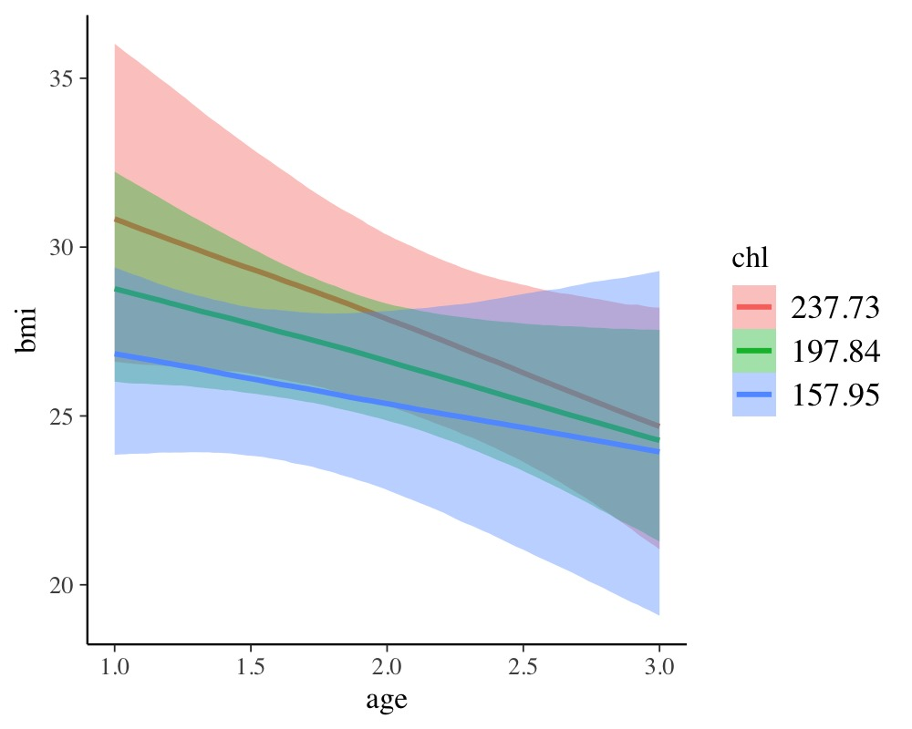
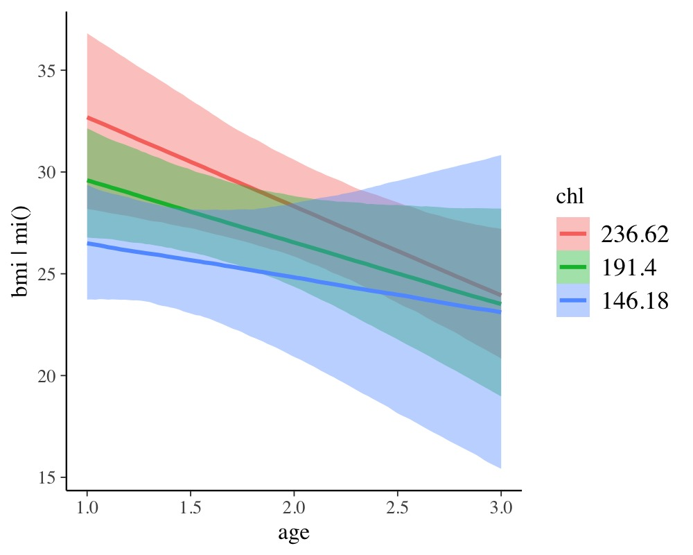

Handle Missing Values with brms
Paul Bürkner
2021-03-14
Source:vignettes/brms_missings.Rmd
brms_missings.RmdIntroduction
Many real world data sets contain missing values for various reasons. Generally, we have quite a few options to handle those missing values. The easiest solution is to remove all rows from the data set, where one or more variables are missing. However, if values are not missing completely at random, this will likely lead to bias in our analysis. Accordingly, we usually want to impute missing values in one way or the other. Here, we will consider two very general approaches using brms: (1) Impute missing values before the model fitting with multiple imputation, and (2) impute missing values on the fly during model fitting1. As a simple example, we will use the nhanes data set, which contains information on participants’ age, bmi (body mass index), hyp (hypertensive), and chl (total serum cholesterol). For the purpose of the present vignette, we are primarily interested in predicting bmi by age and chl.
age bmi hyp chl
1 1 NA NA NA
2 2 22.7 1 187
3 1 NA 1 187
4 3 NA NA NA
5 1 20.4 1 113
6 3 NA NA 184Imputation before model fitting
There are many approaches allowing us to impute missing data before the actual model fitting takes place. From a statistical perspective, multiple imputation is one of the best solutions. Each missing value is not imputed once but m times leading to a total of m fully imputed data sets. The model can then be fitted to each of those data sets separately and results are pooled across models, afterwards. One widely applied package for multiple imputation is mice (Buuren & Groothuis-Oudshoorn, 2010) and we will use it in the following in combination with brms. Here, we apply the default settings of mice, which means that all variables will be used to impute missing values in all other variables and imputation functions automatically chosen based on the variables’ characteristics.
Now, we have m = 5 imputed data sets stored within the imp object. In practice, we will likely need more than 5 of those to accurately account for the uncertainty induced by the missingness, perhaps even in the area of 100 imputed data sets (Zhou & Reiter, 2010). Of course, this increases the computational burden by a lot and so we stick to m = 5 for the purpose of this vignette. Regardless of the value of m, we can either extract those data sets and then pass them to the actual model fitting function as a list of data frames, or pass imp directly. The latter works because brms offers special support for data imputed by mice. We will go with the latter approach, since it is less typing. Fitting our model of interest with brms to the multiple imputed data sets is straightforward.
fit_imp1 <- brm_multiple(bmi ~ age*chl, data = imp, chains = 2)The returned fitted model is an ordinary brmsfit object containing the posterior samples of all m submodels. While pooling across models is not necessarily straightforward in classical statistics, it is trivial in a Bayesian framework. Here, pooling results of multiple imputed data sets is simply achieved by combining the posterior samples of the submodels. Accordingly, all post-processing methods can be used out of the box without having to worry about pooling at all.
summary(fit_imp1) Family: gaussian
Links: mu = identity; sigma = identity
Formula: bmi ~ age * chl
Data: imp (Number of observations: 25)
Samples: 10 chains, each with iter = 2000; warmup = 1000; thin = 1;
total post-warmup samples = 10000
Population-Level Effects:
Estimate Est.Error l-95% CI u-95% CI Rhat Bulk_ESS Tail_ESS
Intercept 14.59 7.88 -0.92 29.98 1.13 51 269
age 0.13 4.65 -8.57 9.68 1.07 108 1583
chl 0.09 0.04 0.01 0.18 1.15 44 212
age:chl -0.02 0.02 -0.06 0.02 1.07 101 2242
Family Specific Parameters:
Estimate Est.Error l-95% CI u-95% CI Rhat Bulk_ESS Tail_ESS
sigma 3.21 0.61 2.18 4.57 1.23 31 113
Samples were drawn using sampling(NUTS). For each parameter, Bulk_ESS
and Tail_ESS are effective sample size measures, and Rhat is the potential
scale reduction factor on split chains (at convergence, Rhat = 1).In the summary output, we notice that some Rhat values are higher than \(1.1\) indicating possible convergence problems. For models based on multiple imputed data sets, this is often a false positive: Chains of different submodels may not overlay each other exactly, since there were fitted to different data. We can see the chains on the right-hand side of
plot(fit_imp1, pars = "^b")
Such non-overlaying chains imply high Rhat values without there actually being any convergence issue. Accordingly, we have to investigate the convergence of the submodels separately, which we can do by looking at
round(fit_imp1$rhats, 2) b_Intercept b_age b_chl b_age.chl sigma lp__
1 1 1.00 1 1.00 1.00 1.00
2 1 1.00 1 1.00 1.01 1.01
3 1 1.00 1 1.00 1.00 1.00
4 1 1.00 1 1.00 1.00 1.01
5 1 1.01 1 1.01 1.00 1.00The convergence of each of the submodels looks good. Accordingly, we can proceed with further post-processing and interpretation of the results. For instance, we could investigate the combined effect of age and chl.
conditional_effects(fit_imp1, "age:chl")
To summarize, the advantages of multiple imputation are obvious: One can apply it to all kinds of models, since model fitting functions do not need to know that the data sets were imputed, beforehand. Also, we do not need to worry about pooling across submodels when using fully Bayesian methods. The only drawback is the amount of time required for model fitting. Estimating Bayesian models is already quite slow with just a single data set and it only gets worse when working with multiple imputation.
Compatibility with other multiple imputation packages
brms offers built-in support for mice mainly because I use the latter in some of my own research projects. Nevertheless, brm_multiple supports all kinds of multiple imputation packages as it also accepts a list of data frames as input for its data argument. Thus, you just need to extract the imputed data frames in the form of a list, which can then be passed to brm_multiple. Most multiple imputation packages have some built-in functionality for this task. When using the mi package, for instance, you simply need to call the mi::complete function to get the desired output.
Imputation during model fitting
Imputation during model fitting is generally thought to be more complex than imputation before model fitting, because one has to take care of everything within one step. This remains true when imputing missing values with brms, but possibly to a somewhat smaller degree. Consider again the nhanes data with the goal to predict bmi by age, and chl. Since age contains no missing values, we only have to take special care of bmi and chl. We need to tell the model two things. (1) Which variables contain missing values and how they should be predicted, as well as (2) which of these imputed variables should be used as predictors. In brms we can do this as follows:
bform <- bf(bmi | mi() ~ age * mi(chl)) +
bf(chl | mi() ~ age) + set_rescor(FALSE)
fit_imp2 <- brm(bform, data = nhanes)The model has become multivariate, as we no longer only predict bmi but also chl (see vignette("brms_multivariate") for details about the multivariate syntax of brms). We ensure that missings in both variables will be modeled rather than excluded by adding | mi() on the left-hand side of the formulas2. We write mi(chl) on the right-hand side of the formula for bmi to ensure that the estimated missing values of chl will be used in the prediction of bmi. The summary is a bit more cluttered as we get coefficients for both response variables, but apart from that we can interpret coefficients in the usual way.
summary(fit_imp2) Family: MV(gaussian, gaussian)
Links: mu = identity; sigma = identity
mu = identity; sigma = identity
Formula: bmi | mi() ~ age * mi(chl)
chl | mi() ~ age
Data: nhanes (Number of observations: 25)
Samples: 4 chains, each with iter = 2000; warmup = 1000; thin = 1;
total post-warmup samples = 4000
Population-Level Effects:
Estimate Est.Error l-95% CI u-95% CI Rhat Bulk_ESS Tail_ESS
bmi_Intercept 13.68 8.44 -3.15 30.25 1.00 1869 2026
chl_Intercept 141.47 25.25 91.75 192.40 1.00 2118 2344
bmi_age 2.73 5.29 -7.40 13.41 1.00 1465 2228
chl_age 28.70 13.60 1.25 54.89 1.00 2051 2080
bmi_michl 0.10 0.04 0.01 0.18 1.00 1979 2050
bmi_michl:age -0.03 0.02 -0.08 0.02 1.00 1558 2373
Family Specific Parameters:
Estimate Est.Error l-95% CI u-95% CI Rhat Bulk_ESS Tail_ESS
sigma_bmi 3.34 0.76 2.21 5.13 1.00 1482 2145
sigma_chl 40.58 7.91 28.82 59.79 1.00 2269 2271
Samples were drawn using sampling(NUTS). For each parameter, Bulk_ESS
and Tail_ESS are effective sample size measures, and Rhat is the potential
scale reduction factor on split chains (at convergence, Rhat = 1).
conditional_effects(fit_imp2, "age:chl", resp = "bmi")
The results look pretty similar to those obtained from multiple imputation, but be aware that this may not be generally the case. In multiple imputation, the default is to impute all variables based on all other variables, while in the ‘one-step’ approach, we have to explicitly specify the variables used in the imputation. Thus, arguably, multiple imputation is easier to apply. An obvious advantage of the ‘one-step’ approach is that the model needs to be fitted only once instead of m times. Also, within the brms framework, we can use multilevel structure and complex non-linear relationships for the imputation of missing values, which is not achieved as easily in standard multiple imputation software. On the downside, it is currently not possible to impute discrete variables, because Stan (the engine behind brms) does not allow estimating discrete parameters.
References
Buuren, S. V. & Groothuis-Oudshoorn, K. (2010). mice: Multivariate imputation by chained equations in R. Journal of Statistical Software, 1-68. doi.org/10.18637/jss.v045.i03
Zhou, X. & Reiter, J. P. (2010). A Note on Bayesian Inference After Multiple Imputation. The American Statistician, 64(2), 159-163. doi.org/10.1198/tast.2010.09109
Actually, there is a third approach that only applies to missings in response variables. If we want to impute missing responses, we just fit the model using the observed responses and than impute the missings after fitting the model by means of posterior prediction. That is, we supply the predictor values corresponding to missing responses to the
predictmethod.↩︎We don’t really need this for
bmi, sincebmiis not used as a predictor for another variable. Accordingly, we could also – and equivalently – impute missing values ofbmiafter model fitting by means of posterior prediction.↩︎